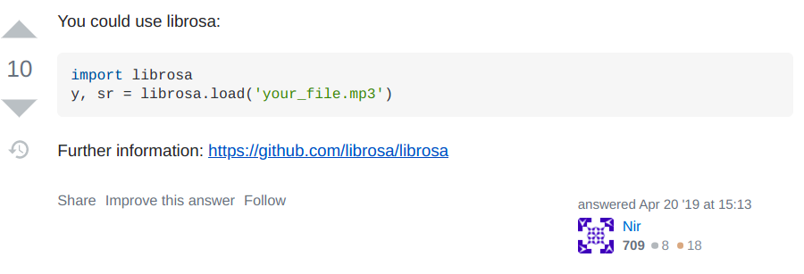

class: center, middle ## Python 101 Pierre Ablin .affiliations[  ] --- # Python : ## Why ? ## What ? ## How ? --- ## Python in a few words - A general purpose langage (used by scientists and developers) - Easy to learn : simple syntax, very forgiving. You don't have to be a programmer ! - Open source : everything is free, continuously improving, and many different uses --- ## Why Python ? Python is becoming the standard for scientific computations - Many libraries in different fields - Easy to prototype (testing a new idea is fast) - Fast in most cases --- ## No compilation ```python x = 1 x + 1 >>> 2 ``` Easy to do trial an error --- ## A few structures Lists: ```python x = [1, 2, 3] x.append(5) x >>> [1, 2, 3, 5] len(x) >>> 4 x[2] >>> 3 x[1:3] >>> [2, 3] ``` Beware ! Indentation starts at **0**: ```python x[1] >>> 2 ``` --- ## Conditionals Branching statements ```python if x == 0: print('x is zero') else: print('x is non-zero') ``` `x == 0` is a boolean: is if `True` if x is 0, `False` otherwise --- ## Loops Syntax: `for var in var_list` ```python x_list = [1, 2, 3, 4] somme = 0 for x in x_list: somme += x somme >>> 10 sum(x_list) >>> 10 ``` Beware: indentation is crucial ! --- ## Functions Functions are a way to separate code into distinct and readable blocks. They take some inputs, process them, and return some outputs ```python def f(x): y = x ** 2 z = 3 * y return z f(3) >>> 27 ``` Functions are very important to have easily readable code: if you need to write the same thing twice, it is almost always better to use a function ! --- ## Python packages Packages contain functions to do many things. They can easily be downloaded. ```python !pip install pytorch ``` For almost everything you want to do, there exists a package --- ## The power of a wide open-source community Say that I have a `.mp3` file, and that I want to load it using python. - I type 'read mp3 file python' in google - I find an answer on Stackoverflow  --- - So I install the package: `pip install librosa` - And I just copy and paste the code, and it works ! --- # First part of the lab :) --- ## Scientific computations in Python - Basic python is inherently slow - Example: compute the dot product between two vectors `x`, `y` $\sum_{i=1}^n x_i y_i$ ```python def dot(x, y): output = 0 for i in range(len(x)): output += x[i] * y[i] return output n = 10000 x = [1, ] * n y = [3, ] * n %timeit dot(x, y) >>> 856 µs ± 34.2 µs per loop (mean ± std. dev. of 7 runs, 1000 loops each) ``` --- ## Scientific computations in Python - Basic python is inherently slow - Example: compute the dot product between two vectors `x`, `y` ```python def dot(x, y): output = 0 for i in range(len(x)): output += x[i] * y[i] return output n = 10000 x = [1, ] * n y = [3, ] * n %timeit dot(x, y) >>> 856 µs ± 34.2 µs per loop (mean ± std. dev. of 7 runs, 1000 loops each) ``` In C++: ```python >>> 7.61 µs ± 438 ns per loop (mean ± std. dev. of 7 runs, 100000 loops each) ``` --- ## NumPy NumPy is a package ```python import numpy as np ``` - Works with `np.array` as base elements: allows to represent vectors in 1d, matrices in 2d, tensors in > 2d... ```python x = np.array([[1, 2], [3, 4]]) x >>> array([[1, 2], [3, 4]]) x[0, 0] >>> 1 x[1] >>> array([3, 4]) x[:, 1] >>> array([2, 4]) x.shape >>> (2, 2) ``` --- ## NumPy is fast - NumPy is very fast for linear algebra operations: it calls powerful and highly optimized subroutines written in `C` or `Fortran`. ```python %timeit dot(x, y) >>> 856 µs ± 34.2 µs per loop (mean ± std. dev. of 7 runs, 1000 loops each) %timeit np.dot(x, y) >>> 3.59 µs ± 328 ns per loop (mean ± std. dev. of 7 runs, 100000 loops each) ``` **Much faster** than Pure python code --- ## Basic NumPy operations `x`, `y` are numpy arrays - `x + y`: elementwise addition - `x * y`: elementwise multiplication (**NOT** matrix multiplication) - `np.dot(x, y)` or `x @ y`: matrix multiplication Element-wise functions - `np.exp(x)`: elementwise exponential - `np.sin(x)`: elementwise sine Transpose - `x.T` --- # Part 2 of the lab :) --- ## Plotting in Python: matplotlib - Matplotlib is a package ```python import matplotlib.pyplot as plt ``` - It allows to plot curves, cloud of points, histograms... - Powerful but slightly painful --- # Part 3 of the lab :)